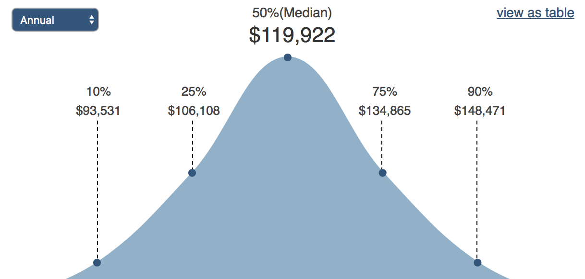

Career Research Summary
The guidelines of a professional Program Manager.
Specific Career
Information Technology Program Manager
The IT program manager oversees a team of information systems professionals who are engaged in various projects. The reason why I chose the specific career of an IT Program Manager is because I already have extensive knowledge in coding and computer science and I believe that pairing that with my knowledge in business would allow for me to be a successful program manager as I found in my research. I believe that this career would be most fitting to my personality.
Description
Program managers maintain an important occupation within an organization’s project management group. Instead of managing individual projects, program managers coordinate teams working on similar projects and oversee their progress. Specifically, in a technology related company, program managers might supervise works to develop a new suite of accounting software. Program managers collaborate with members of an organization’s senior management team to establish the overall strategy and objectives for a group of projects. They aim to align the outcome of the projects with the organization’s overarching business goals. Program managers reach out to the project managers and explain the strategy to ensure that individual project goals align with the strategy.
To ensure project teams have the resources they need, program managers decide budgets and allocate people and technical resources to individual teams. Additionally, they rank and determine priorities. In order to reduce waste and costs, they identify tasks that are common to a number of projects and ensure that teams do not duplicate work. Program managers review the skills available within the project teams and arrange any necessary training to improve performance. Program managers also set deadlines to ensure that projects are focused. To obtain the information they need to coordinate and monitor progress across all projects, program managers establish a formal reporting structure.
Skills & Education
Program managers must have a concrete background in project management. They must also have fantastic written and oral communication skills and have both leadership and teamwork skills. Other valuable skills under this career include being detail oriented, working well under pressure, having organizational skills, being able to multi-task, and administering budgets across multiple projects.
Regarding the education requirements, a bachelor's degree in management information systems or computer science offers a starting point on the road to a career as an IT program manager. An MBA degree in information technology management is generally required to advance into a management role. Program managers can expect increasing demand for their combined business and technical acumen. The Bureau of Labor Statistics forecasts "excellent" job prospects for information systems managers, with 17 percent growth in the 2008-2018 period.
Money/Salary
The median annual Information Technology Manager salary is $119,922, as of May 30, 2017, with a range usually between $106,108-$134,865, however this can vary widely depending on a variety of factors. Our team of Certified Compensation Professionals has analyzed survey data collected from thousands of HR departments at companies of all sizes and industries to present this range of annual salaries for people with the job title Information Technology Manager in the United States.
Future Job Outlook & Advancement
Once many program managers establish their career, there are a number of different jobs that project managers may pursue. These jobs include chief operating officer (COO) and a senior management role that falls under various different titles depending on the company and the industry. Moving into the COO for many program managers with at least 10 years of experience is fairly easy and smooth. Earning a Master of Business Administration, or MBA may be a good idea in attaining this position. The transition to this role inevitably includes an increase in responsibility and also a substantial increase in pay. The transition to a senior management role is also a significant promotion that results in not only increased responsibility, but also an increased salary.